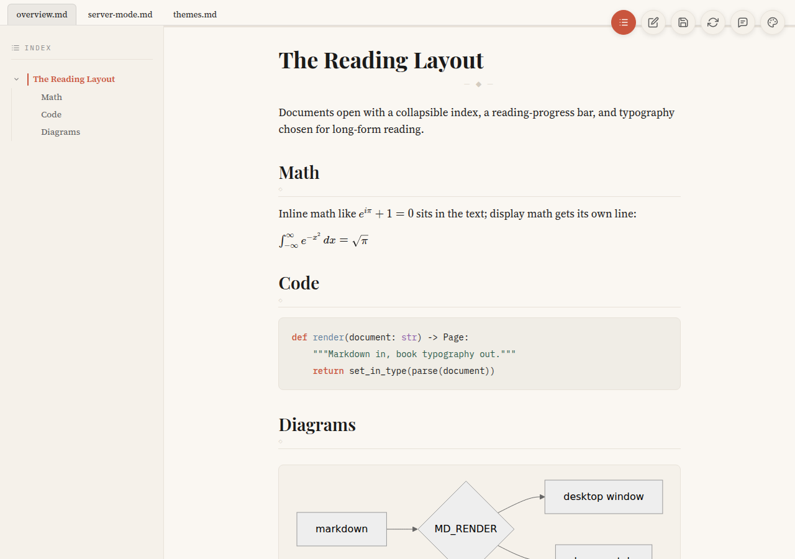
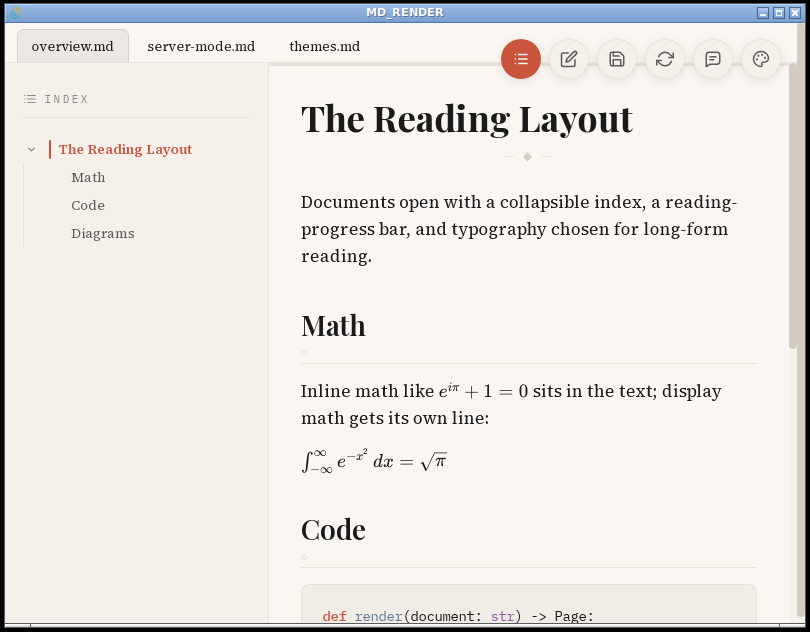

Markdown, set like a book.
A markdown renderer with book typography — six themes, a document index, math, Mermaid, review comments — in a desktop window or served to your browser over SSH.


Overview
MD_RENDER opens .md and .markdown files and sets
them in serious book typography. It is a small Tauri app: a Rust core with a
React reading surface, built for macOS and Linux.
- Six typographic themes, three light and three dark, each with its own faces, colors and code palette
- Collapsible document index built from headings, with scroll-spy and a reading-progress bar
- Several files open as tabs — in the window or in the browser
- GitHub-flavored markdown, KaTeX math, Mermaid diagrams, syntax-highlighted code, local images
- Split-pane editor with save, 30-second autosave, and save-on-close
- Review comments attached to selected passages, stored in the markdown itself, with clean export
- Server mode: the same app served over HTTP, with the same editing
Install
One line — detects the platform, checks prerequisites, clones and runs
make install. No sudo; if build tools are missing it says
which ones and stops.
curl -fsSL https://aadityasalgarkar.github.io/md_render/install.sh | shOr grab a build from
Releases
— dmg for macOS (unsigned; right-click → Open the first time), deb, rpm or
AppImage for Linux. Or by hand: make install detects the
platform and installs the right thing. Both installs also place the
mdrender wrapper at ~/bin/mdrender.
macOS
git clone https://github.com/AadityaSalgarkar/md_render
cd md_render
npm install
make install # builds and installs MD_RENDER.app + ~/bin/mdrenderTo make it the default app for markdown:
brew install duti && duti -s com.mdrender.app .md all
Linux
Build prerequisites on Debian/Ubuntu (names differ on other distros), plus Rust via rustup and Node:
sudo apt install build-essential curl wget file pkg-config \
libwebkit2gtk-4.1-dev libxdo-dev libssl-dev \
libayatana-appindicator3-dev librsvg2-dev libgtk-3-devgit clone https://github.com/AadityaSalgarkar/md_render
cd md_render
npm install
make install # everything under ~/.local and ~/bin — no root| Path | Contents |
|---|---|
~/.local/bin/md-render | application binary |
~/bin/mdrender | command-line wrapper |
~/.local/share/applications/md-render.desktop | desktop entry, .md association |
~/.local/share/icons/hicolor/*/apps/ | icons |
npm run tauri:build also emits .deb,
.rpm and .AppImage bundles under
src-tauri/target/release/bundle/. Set PREFIX to
install elsewhere: make install-linux PREFIX=/usr/local.
Command line
mdrender # open the app
mdrender notes.md # open one file
mdrender a.md b.md ./docs # several files and a directory — tabs
mdrender --port notes.md # serve to a browser instead (port 9999)
mdrender --mcp # MCP server over stdio, for agentsDirectory arguments contribute every markdown file beneath them, recursively, in stable sorted order. The window and the server build their tabs from the same list, so the same arguments produce the same result in either mode.
The refresh control in the app rescans those directories, so markdown added after launch appears as a new tab. Files opened from the file manager or via a link join the tab strip rather than replacing the open document.
Server mode
--port serves the app over HTTP instead of opening a window.
The port defaults to 9999, falling forward to the next free port; pass a number to pin one. Each directory becomes a workspace at /<dirname>/:
mdrender --port 8080 notes.md. Everything works as it does in
the window — tabs, index, themes, math, diagrams, images, and editing and
saving back to disk.
Running the command again while a server already holds the port adds the file as another tab rather than failing:
$ mdrender --port extra.md
added to http://127.0.0.1:9999
extra.mdAn open browser picks the new tab up within a few seconds, no reload.
Reading over SSH
The main reason the mode exists: the machine rendering the markdown needs no display.
ssh -L 9999:127.0.0.1:9999 my-server
mdrender --port ~/notes.md # on the serverThen open http://127.0.0.1:9999 in your local browser.
What the server touches
Server mode can edit and save, so its reach is bounded deliberately:
- Binds
127.0.0.1by default.--hostoverrides it and prints a warning, since any other address exposes your files — and the ability to edit them — to the network. - Reads and writes are limited to the documents the server was told to open. Sitting inside a served directory is not enough; a stray file next to your markdown cannot be read or overwritten.
- Images are served only from the directories of open documents, and
only with image extensions. Paths are resolved before checking, so
..and symlinks cannot escape. - Every write carries a token the server injects into the page it serves. A page on another origin cannot read that token, so it cannot forge a write.
- Changing what a running server does from outside the page — adding
or closing tabs and workspaces, steering the view, stopping it — requires
the token from
$XDG_STATE_HOME/md-render/servers/<port>.json, written with mode0600— only processes running as the same user (the MCP server included) can widen what the server touches.
Editing & comments
The editor pane sits beside the preview behind a draggable divider. With a file open, Save writes immediately; unsaved edits also autosave every 30 seconds and before the window closes. When nothing is waiting to save, the same sync refreshes the preview from disk, so edits made elsewhere show up.
Select any passage in the preview to attach a review comment. Comments
live in the markdown itself as <chat> blocks beside the
text they discuss, so they travel with the file and survive any editor.
Export clean .md writes a copy with every comment stripped —
notes.md becomes notes.clean.md next to it.
Themes
Chosen from the palette control; the choice is remembered. Each theme is a full set of faces, surfaces and a code palette. This page wears two of them — try the palette button above.
| Light | Dark | ||
|---|---|---|---|
| Warm Paper — book typography on aged cream | Midnight Ink — warm ink on blue-black | ||
| Newsprint — high-contrast editorial broadsheet | Nocturne — muted iris & foam on plum | ||
| Forest — moss and bark on a sage page | Evergreen — moss and amber on pine-black |
Claude Code integration
MD_RENDER ships an MCP server that drives the
--port mode, so an agent can do everything a reader does by
hand in the browser. Register it once:
claude mcp add mdrender -- mdrender --mcpor in a project's .mcp.json:
{ "mcpServers": { "mdrender": { "command": "mdrender", "args": ["--mcp"] } } }Tools: list_servers, start_server,
stop_server; list_workspaces,
open_directory, close_workspace;
list_tabs, open_tab, close_tab,
refresh; read_document,
write_document, add_comment,
export_clean; focus_tab, set_theme.
Every result names the URL to hand the human, and an open browser follows
within a few seconds — a tab the agent opens appears, a tab it focuses
comes to the front, a theme it sets applies. make install
puts the bundled server at
~/.local/share/md-render/mcp/index.js; it needs
node.
Separately, a small PostToolUse hook opens plan files in the desktop window the moment Claude Code writes them:
#!/bin/bash
# ~/.claude/hooks/open-plan-in-md-render.sh
INPUT=$(cat)
FILE_PATH=$(echo "$INPUT" | jq -r '.tool_input.file_path // empty')
if [[ "$FILE_PATH" == ~/.claude/plans/* ]]; then
~/bin/mdrender "$FILE_PATH" 2>/dev/null &
fi
exit 0Register it in ~/.claude/settings.json under
hooks.PostToolUse with matcher Write. See
skills.md for a ready-made skill covering both.
Development
npm run tauri:dev # Tauri window + Vite dev server
npm run tauri:build # production build and bundles
npm run dev # frontend only, in a browser
make test # Rust + frontend test suites
npm run lintThe frontend is React 18 + TypeScript on Vite, markdown via
react-markdown with remark-gfm, remark-math, rehype-katex, rehype-highlight
and rehype-raw. The Rust side is Tauri 2 plus an axum server for
--port. Tests run against the real binary over real HTTP —
nothing in the suites mocks the code under test.
A note for builders: a plain cargo build --release emits
target/release/app, which expects the dev server and shows a
blank “could not connect” window. The usable binary comes from
npm run tauri:build, as target/release/md-render.
For machines
Two plain-text files describe this project to language models and agents:
- llms.txt — a compact map of the project for LLMs, following llmstxt.org
- skills.md — a drop-in skill teaching an agent to render and serve markdown with MD_RENDER
mdrender --mcp— the MCP server, for agents that would rather call tools than shell out